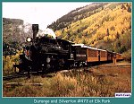
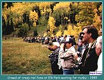
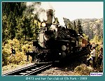
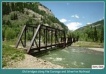

| Elk Park is one of the most picturesque stops on the line from Durango to Silverton. A siding, and wye are found in Elk Park. The railroad built the wye in 1884 to turn locomotives when snow blocked the line. A stub switch and original harp switch stand could be seen until 1973. The rare switch stand was removed to protect it from vandals in that year. Many people who use the Silverton Train as a way into the back country get off in Elk Park. Fisherman, hikers, and backpackers all use the area as a flag stop. The train is the only way into many areas of the Animas Canyon. |
| The first photo is of Durango and Silverton Railroad K-28 #473. The second photo, shows the large crowd that jumped off the train to take a shot of the run by. We were on the charter trip with the 9th National Narrow Gauge Convention. There were about 100 railfans all lined up taking photos. It was funny at the time because someone exclaimed "I 'm glad I bought that stock in Kodak last week." Well, railfans are a strange group. By the way, were you in this group? The area is very beautiful and makes for great photos. I wish I had the equipment to capture the video of the run by so others could download it. It was awesome. |
|
 |
Durango and Silverton #473 in Elk Park
1989 (43k) |
|
 |
Railfans in Elk Park during the 16th National Narrow Gauge Convention
1989 (66k) |
|
 |
Durango and Silverton #473 at Elk Park
1989 (52k) |
|
 |
This old four span bridge was built in 1884. It is no longer in use due to damage to the abutments from spring runoffs.
(122k) |